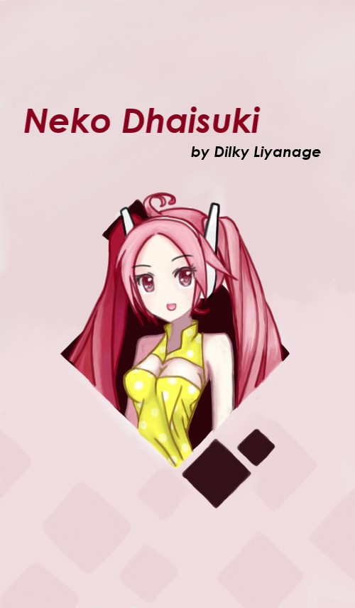
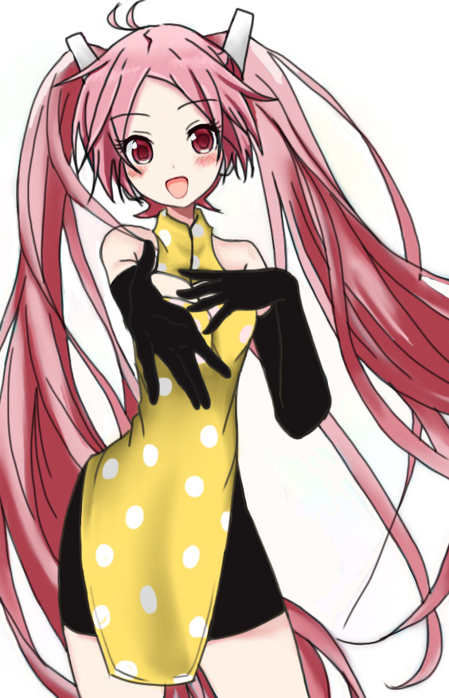
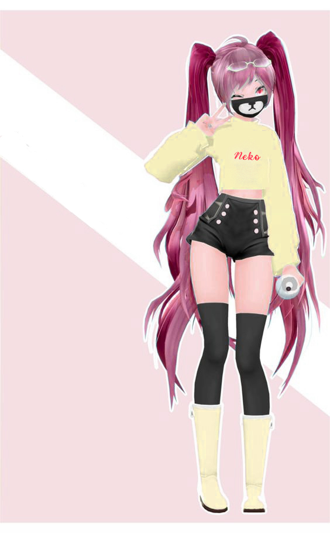
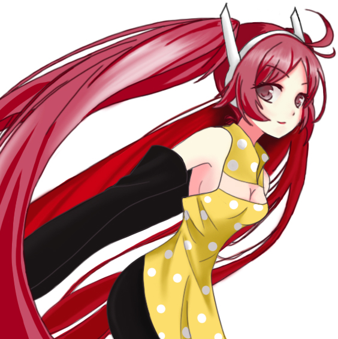
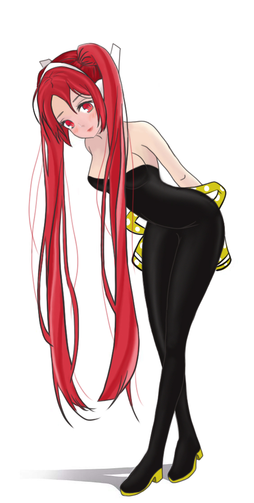

Neko Dhaisuki
Hi, I'm Dilky.
Illustartion Artist, a Weeb, as well as an IT Geek.
Neko Dhaisuki
Neko Dhaisuki is an anime character that I created which represents my art page. She is a teenage girl with long,
turquoise twin tails and her theme colour is reddish-pink. Here you will see the newly released album of Neko.
This art page belongs to the artist Dilky Liyanage; and that is me :)
I'm 20 years old and I live in Battaramulla, Sri Lanka.
I'm really interested in Japanese culture, which is why my most artworks are inspired by anime characters which I love.
Other than that, I also have tried some realistic artworks too. I do both traditional and digitial artworks.
From this page, you'll be able to see my talent as a fellow artist and I hope you will enjoy it to the very best!

Cover Page
Neko Dhaisuki

Follow Me on Instagram!
Neko Dhaisuki

Three Cups of Cuteness
Neko Dhaisuki

Feedbacks are Important!
Neko Dhaisuki

Ara Ara
Neko Dhaisuki
Profile Picture
Neko Dhaisuki